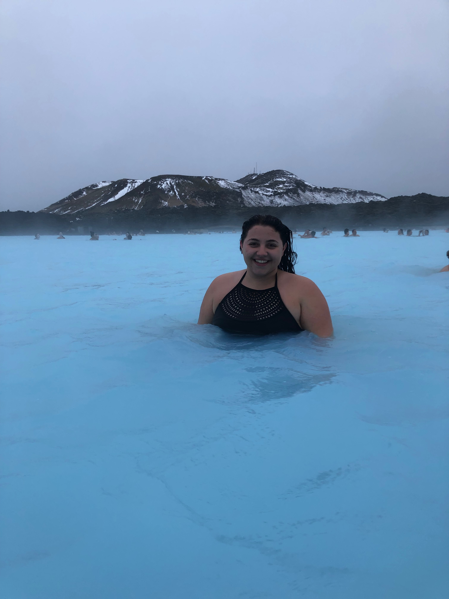
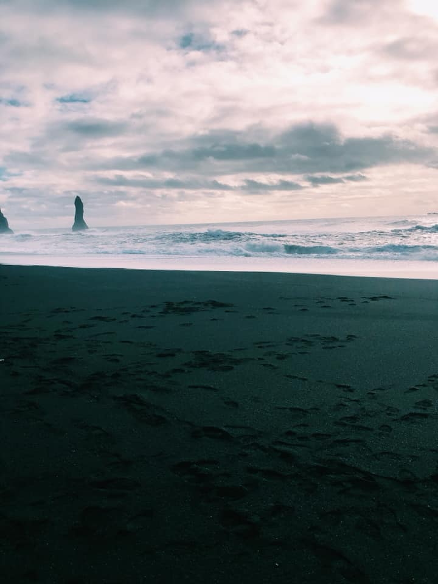
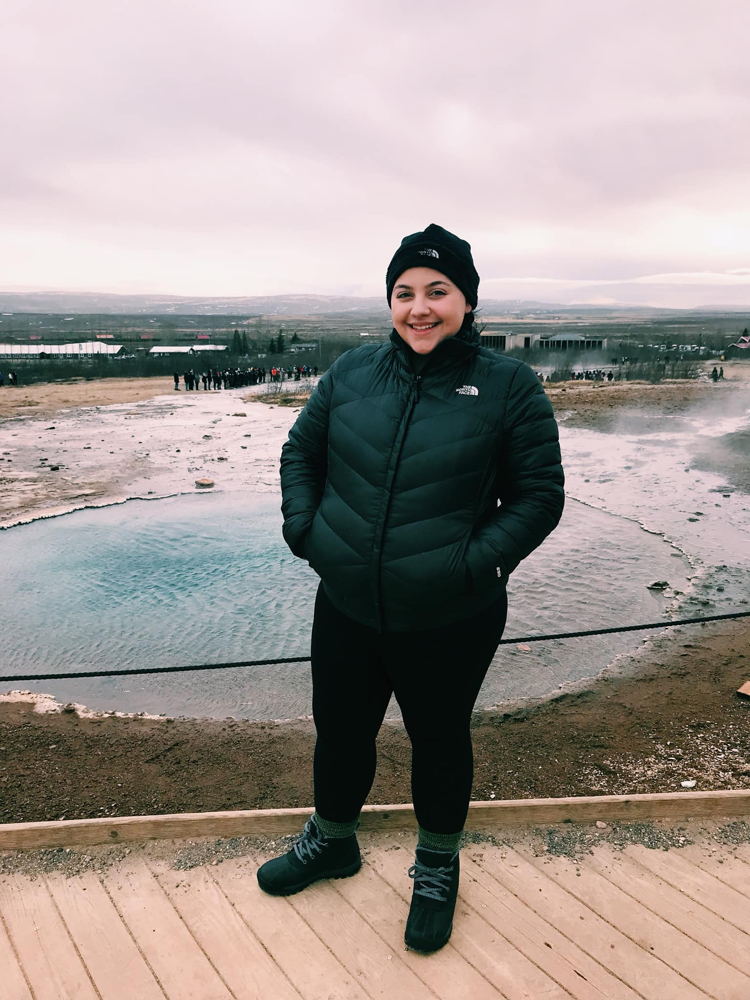
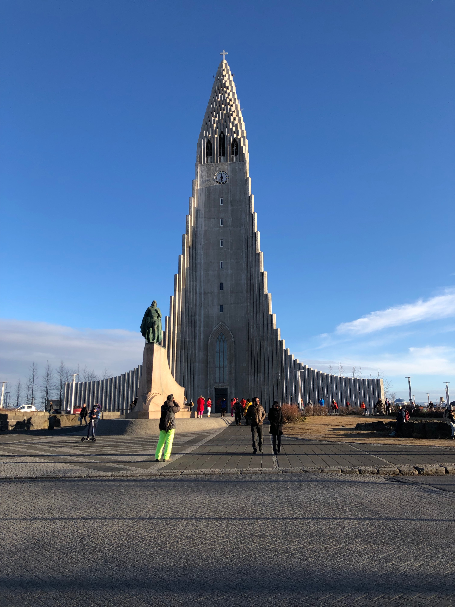

When going to Iceland it only makes sense to visit what they are known for...Glaciers! My friends and I did a 6 hour excursion to Langjokull Glacier. This Glacier is the second largest ice cap in Iceland. We booked our tour through Artic Adventures which is a tourist service highly rated by many American travelers. A member of the Artic Adventure team picked us up at the central bus station in Reykjavik where we drove about two hours to a remote location. At this location we were transferred over to what they refer to as a ‘super jeep’ which took us up hill to the campsite at the base of a glacier. For the price of $199 the busride, superjeep ride, all snowmobile gear, 2 hours of snowmobiling and a visit to an ice cave (as pictured) were included. This is a MUST when traveling to Iceland.
If you have an Instagram, you have no doubt seen the majestic waters of the Blue Lagoon in Iceland. The Blue Lagoon is a geothermal spa in Svartsengi, Iceland. To my surprise, the experience was more of a spa day, rather than a thrilling tourist adventure. After a much needed break from traveling, the Blue Lagoon was the perfect place to wind down. The cost of admission to the Blue Lagoon ranges from $49-$555 USD. The packages all include entrance to the Blue Lagoon, a mud mask and a beverage. As the price increases so does the amount of luxury experiences and additional services. When traveling to Iceland the Blue Lagoon is a staple. There is nothing better than relaxing in a geothermal spa with a view of volcanic rocks.
Be prepared to see something like you have never seen before. The black sand beaches located in Reynisfjara, Iceland is a true natural wonder in itself. These one-of-a-kind beaches are right off the south coast of Iceland. We continued to travel with Artic Adventures as we had a package deal with the glacier tour. For $163.25 there was a bus that picked us up at the central bus terminal in Reykjavik and drove us to the coast. The price included the pickup at a central location, a guide who explained an abundance of cool information about the beaches and iceland, as well as a professional guide who gave us a tour of the beaches. Whether you’re a frequent beach goer or not, a trip to Reynisfjara is a good time for anyone.
If you are ready for a full day adventure the Golden Circle Classic Day Trip from Reykjavik packs in many gorgeous sights in one trip. Touring the Golden Circle was one of the most highly recommended activities from Icelandic natives. This tour included three spots. First, a bus picked us up at the central bus terminal in Reykjavik and our first spot was to see the oldest parliament in the world, Thingvellir. This stop included a lot of history but very fascinating information. The second stop and my personal favorite was the Geysir and Strokkur hot springs. The final spot was the Gulfoss waterfall, which was a stellar sight. This tour featured a lot of Iceland’s natural sights and was a day fully immersed in nature. I highly recommend this for any person coming to Iceland.
The city of Reykjavik has evolved immensely over the past decade as a major tourist site. The town is set up to be extremely walking friendly and has one main trip that consists of shops, food and information about the city. When arriving to Reykjavik it is hard to miss one of the cities biggest sites which is the Hallgrimskirkja. This church has an extremely unique architectural design and is a Lutheran Parish church. The church got its name from a famous Icelandic poet, Hallgrimur Petursson. The church was built in 1986 and is a cool sight to see. On certain days of the year toursits can go to the top of the church to see the incredible views of Reykjavik.